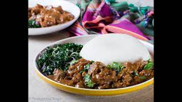
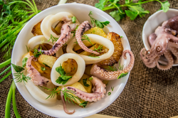

I will first talk about my favourite people to do the things with
Below is a list of my best friends
Secondly, I will talk about my favourite foods. Below is a list
Above i have listed my favourite people and my favourite foods.
I also have activities i love to so such as swimming, reading and watching movies.
I will not forget to mention that anything that makes me money is also something I enjoy doing
some websites i love to link up with my friends on are instagram and facebook.